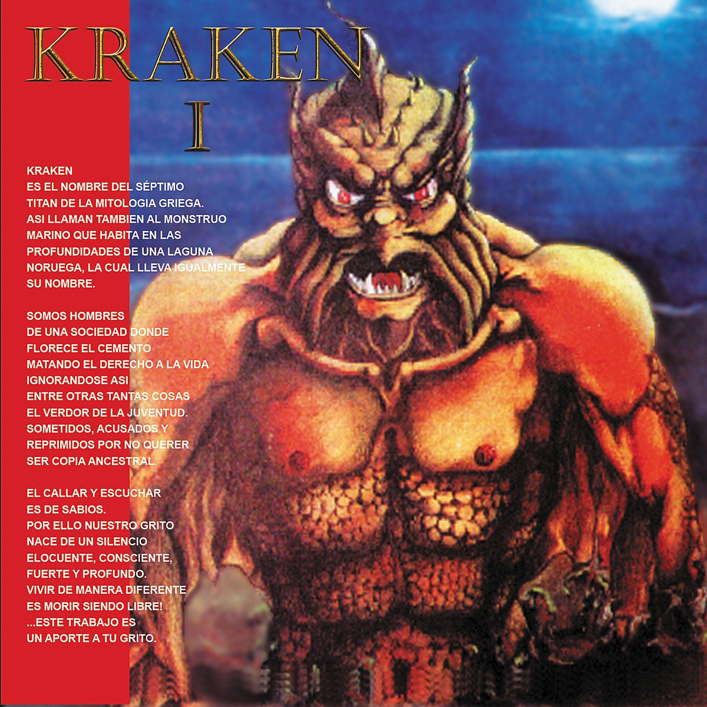
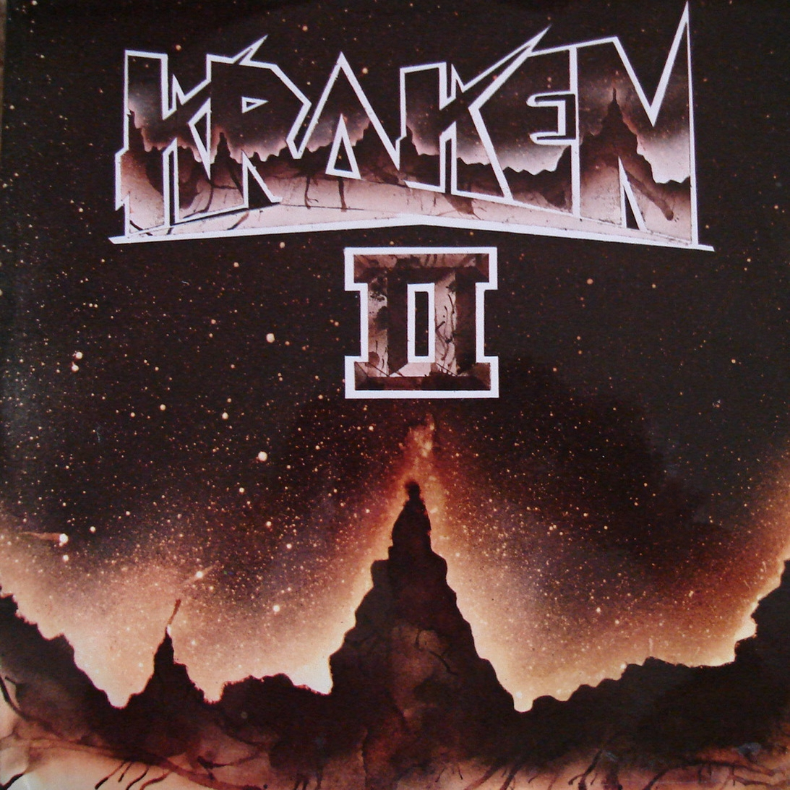
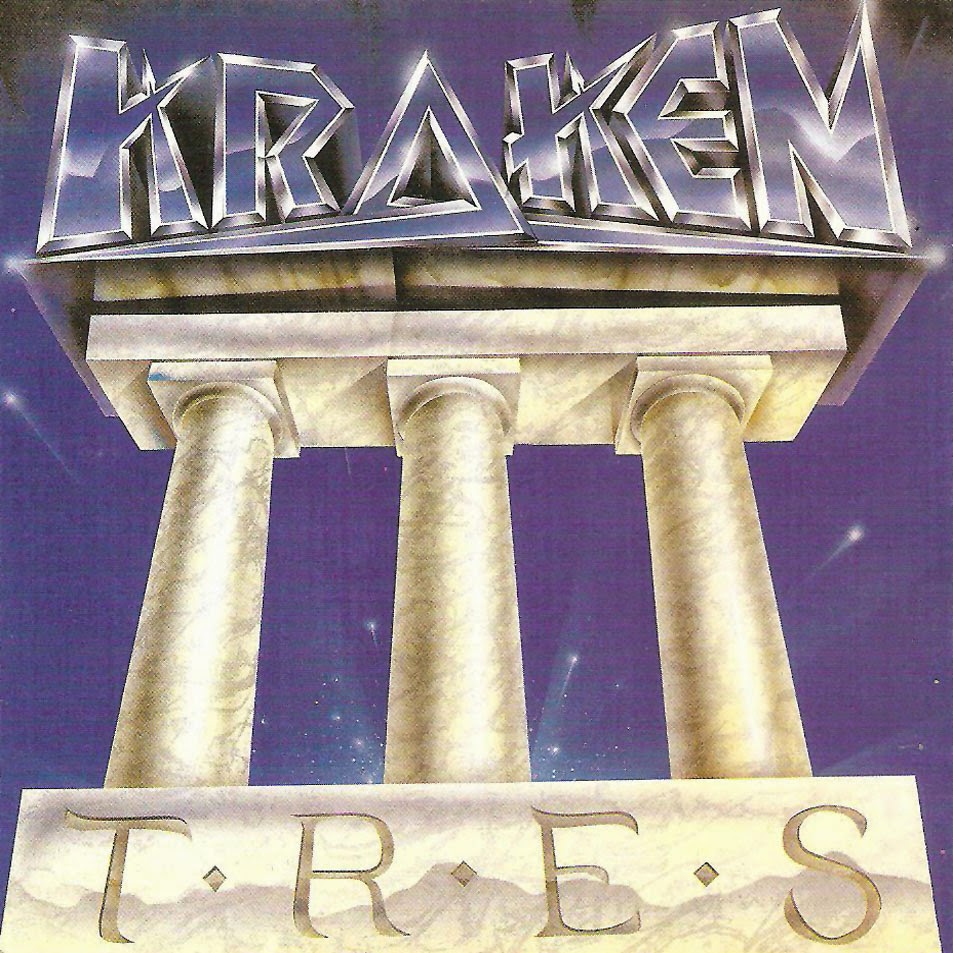

Kraken I
En 1986 se logra concretar la grabación del primer single de la banda con el respaldo del tradicional sello Codiscos sin embargo, la poca tradición del género en Colombia y el riesgo que implicaba impulsar la producción masiva del sencillo género desconfianza a la disquera que requirió al menos 500 firmas de personas comprometidas a comprar las primeras copias del trabajo que incluiría «Todo Hombre es una Historia» como cara A respaldado por «Muere Libre», que al final agotarían hasta 10 ediciones, es decir vendería 10 000 copias.
Canción: Todo homre es una historia:
Kraken II:
Kraken II es el nombre del segundo álbum de estudio del grupo de heavy metal colombiano Kraken. Fue lanzado al mercado el 5 de diciembre de 1989 a través de Codiscos.El primer sencillo del álbum fue«Vestido de cristal»su segundo corte fue «Una vez más» el primero logra rápidamente la aceptación del público en general,de esta manera inició una nueva etapa artística escalando posiciones importantes en las listas de "hits"radiales,mientras que el segundo no contó con una aceptación global inmediata con los años se convertiría en uno de los temas favoritos de sus seguidores
Canción: Vestido de Cristal
Kraken III:
Kraken III es el nombre del tercer álbum de estudio del grupo de heavy metal colombiano Kraken. Fue lanzado al mercado el 4 de septiembre de 1990 a través de Sonolux. El primer sencillo del álbum fue «Rostros ocultos». Su segundo sencillo fue «Lágrimas de fuego». Este álbum confirmó la tendencia progresiva de la banda, que ofreció una identidad al grupo y un concepto de lo que sería Kraken a futuro. Jaime Ochoa Lalinde después de haber sido un músico invitado en el álbum anterior (Kraken II) entra a ser parte de la alineación de la banda en este álbum.